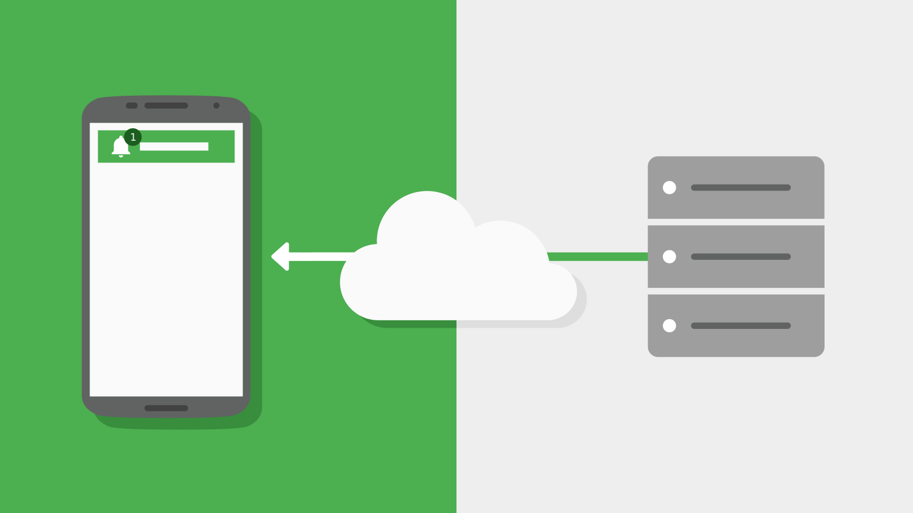

Use JPConnect to Quick Connect
Need a better SURVEY framework ?
Make ANNOUNCEMENTS effective ?
Say good bye to
"Point of you", "JPMCNotifications" etc etc..
No more excuses - time consuming, un-user friendly !
Announcements, Reviews are vital
For a better and healthy workplace.
To improve the quality of service in an organisation e.g Dining, Transport or facilities.
- An organisation time to time conduct surveys, collect feedbacks.
- Emails, sms and kiosks are being used to collect user feedbacks.
Do we get enough participations ?
No !!
Why ?
Emails are not the right medium.
SMS is expensive and not friendly to reply.
Kiosks needs extra infrastructure costs and also demands users physical presence.
Any solutions ?
Yes ! With a simple MOBILE APP built with JUST TOUCH IDEA into mind and powered by PUSH NOTIFICATIONS.
An organsiation can also save a lot of money by adapting this app as mobile cloud messaging is free e.g GCM by Google.
Why a mobile app?
More than 95% of messages delivered to Mobile apps are read.
JUST TOUCH INTERFACE fetches more user responses.
One app one purpose.
It is easy to use too.
What are push notifications?
A push notification is a message that pops up on a mobile device.
They can be sent at any time, even when user is offline.
Users need not have to be in the app or keep the app running.
Notifications are self explanatory and does not need filterations.
They can be scheduled, can be geo-targetted too.

Make it as simple as possible, but no simpler.
Albert Einstein
 Try JPConnect
Try JPConnect